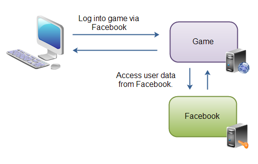

8th September 2014
In the later part of my co-op term at Careerify Corporation, I was involved in making the main application use OAuth 2.0 (which was previously using Oauth 1.0a) to access LinkedIn APIs. I'd like to share my understanding of how OAuth 2.0 works in this blog.
OAuth 2.0 allows an application access the user's data in another application without gaining access to the user's credentials for that application. You might have come across applications that require you to log into applications like Facebook or LinkedIn. Once logged in, these applications can gain access to your Facebook or LinkedIn information without knowing the credentials of your Facebook account. OAuth 2.0 lets third party applications gain access to user's information on some other application. To quote the OAuth website, "The OAuth 2.0 authorization framework enables a third-party application to obtain limited access to an HTTP service".
For the purpose of demonstration, lets say the third party application uses LinkedIn information of the user. So the authenticating application in this case is LinkedIn. The developer of the third party application, while registering the application with Linkedin specifies one or more redirect URIs. This means that the authenticating application can successfuly redirect the user to one of those URIs. It is at this stage that the developer gets the API key and the API secret key.
The user clicks a button that redirects him to a page that asks him to enter his LinkedIn credentials. The user enters the credentials and grants the third party application access to user's account on LinkedIn. LinkedIn then redirects the user to the redirect URI specified by the developer and appends an authentication code to the URI. Now, the third party application makes a POST call to the authenticating application and exchanges the authentication code for access token. This access token is the key to the treasure trove of information LinkedIn has. The client application can then make API calls to LinkedIn and access users data using the access token, without which, the access is not possible.
Note that OAuth grants the third party application access to the Linkedin APIs without laying hands on the user's Linkedin credentials. This is essential because the user would not want to disclose his credentials!
Acknowledgement: I used this website to obtain the image that demonstrates how OAuth 2.0 works